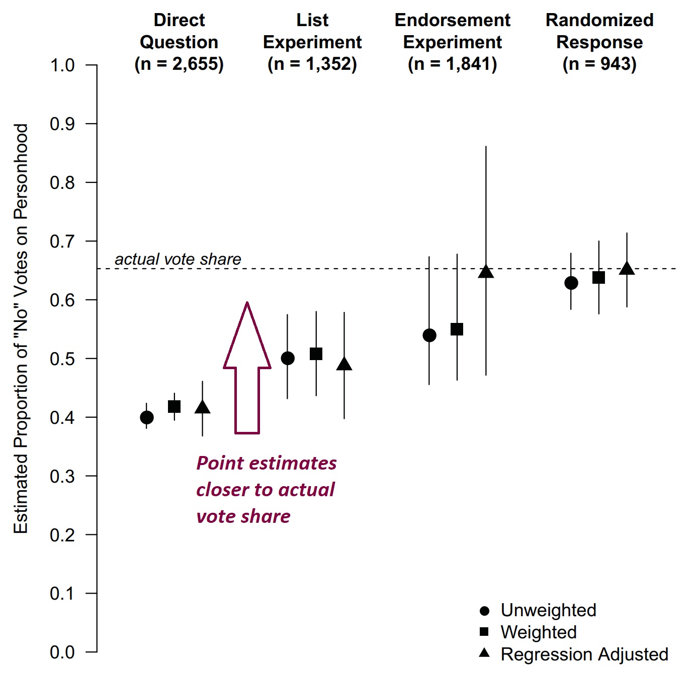
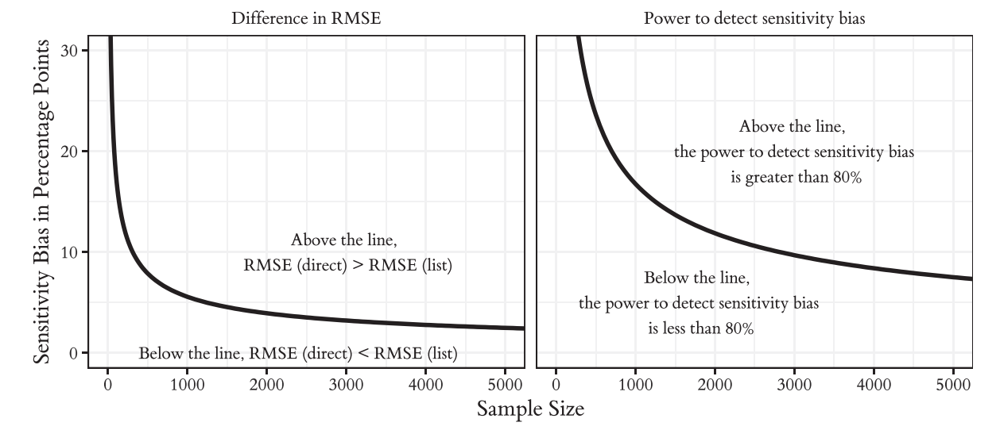

# Packages
library(tidyverse)
## ── Attaching core tidyverse packages ──────────────────────── tidyverse 2.0.0 ──
## ✔ dplyr 1.1.2 ✔ readr 2.1.4
## ✔ forcats 1.0.0 ✔ stringr 1.5.0
## ✔ ggplot2 3.4.2 ✔ tibble 3.2.1
## ✔ lubridate 1.9.2 ✔ tidyr 1.3.0
## ✔ purrr 1.0.1
## ── Conflicts ────────────────────────────────────────── tidyverse_conflicts() ──
## ✖ dplyr::filter() masks stats::filter()
## ✖ dplyr::lag() masks stats::lag()
## ℹ Use the conflicted package (<http://conflicted.r-lib.org/>) to force all conflicts to become errors
library(DeclareDesign)
## Loading required package: randomizr
## Loading required package: fabricatr
## Loading required package: estimatr
##
## Attaching package: 'DeclareDesign'
##
## The following object is masked from 'package:dplyr':
##
## vars
##
## The following object is masked from 'package:ggplot2':
##
## vars
library(kableExtra)
##
## Attaching package: 'kableExtra'
##
## The following object is masked from 'package:dplyr':
##
## group_rows
# ggplot global options
theme_set(theme_bw(base_size = 20))Improving the Measurement of Sensitive Survey Questions with Double List Experiments
Gustavo Diaz
Postdoctoral Fellow
Department of Political Science
McMaster University
gustavodiaz.org
# Data prep
load("attn_rep.RData")
cali = dle
remove(dle)
# Analysis
a = cali %>%
split(.$experiment) %>%
map(~difference_in_means(listA ~ trt_A, data = .)) %>%
map(tidy) %>%
bind_rows(.id = "experiment")
b = cali %>%
split(.$experiment) %>%
map(~difference_in_means(listB ~ trt_B, data = .)) %>%
map(tidy) %>%
bind_rows(.id = "experiment")
pool = cali %>%
mutate(id = row_number()) %>%
pivot_longer(cols = c(listA, listB)) %>%
rename(list = name, count = value) %>%
mutate(Z = ifelse(trt_A == 1 & list == "listA" | trt_B == 1 & list == "listB",
1, 0)) %>%
split(.$experiment) %>%
map(~ lm_robust(count ~ Z + list, clusters = id, se_type = "stata", data = .)) %>%
map(tidy) %>%
bind_rows(.id = "experiment") %>%
filter(term == "Z")
est_df = rbind(a, b, pool)
est_df$term = fct_relevel(est_df$term, "trt_A", "trt_B", "Z")ArriveCAN

COVID screening questions
What proportion of app users answered “yes” to having symptoms?
. . .
- If you are not sick, you answer no
. . .
- If you are sick…
. . .
- You don’t travel and don’t use the app
. . .
OR
. . .
- You lie about having symptoms and travel anyway
List experiments
Here is a list of things that some people have done. Tell me HOW MANY of them you have done in the past two years. Do not tell me which ones. Just tell me how many:
. . .
- Discussed politics with family or friends
- Cast a ballot for Governor Phil Bryant
- Paid dues to a union
- Given money to a Tea Party candidate or organization
List experiments
Here is a list of things that some people have done. Tell me HOW MANY of them you have done in the past two years. Do not tell me which ones. Just tell me how many:
- Discussed politics with family or friends
- Cast a ballot for Governor Phil Bryant
- Paid dues to a union
- Given money to a Tea Party candidate or organization
- Voted ‘YES’ on the ‘Personhood’ Initiative on the November 2011 Mississippi General Election ballot
Prevalence rate
\[ \text{Prevalence(X)} = \text{Mean(List with X)} - \text{Mean(List without X)} \]
. . .
Proportion of individuals in the target population who hold the sensitive attitude or behavior
We obtain an estimate while keeping individual responses anonymous
This reduces sensitivity bias

This reduces sensitivity bias

But increases variance

Bias-variance tradeoff

. . .
List experiments need large samples!
To make matters worse
More sensitive attitudes more interesting more uncommon harder to detect
Some sensitive attitudes are more prevalent among hard-to-reach populations
Multiple sensitive attitudes increase sample size requirements
Same when comparing subgroup effects
Very hard to make list experiments work
What to do?
Double list experiments
List A
- Californians for Disability (advocating for people with disabilities)
- California National Organization for Women (advocating for women’s equality and empowerment)
- American Family Association (advocating for pro-family values)
- American Red Cross (humanitarian organization)
List B
- American Legion (veterans service organization)
- Equality California (gay and lesbian advocacy organization)
- Tea Party Patriots (conservative group supporting lower taxes and limited government)
- Salvation Army (charitable organization)
Sensitive item
Organization X (advocating for immigration reduction and measures against undocumented immigration)
Randomly appears in list A or B
Equivalent to making two parallel list experiments
Calculate prevalence by averaging the two single-list estimates
Variance reduced by half
ggplot(est_df %>% filter(experiment == "X")) +
aes(x = term, y = estimate, shape = term) +
geom_hline(yintercept = 0, linetype = "dashed") +
geom_point(size = 4, position = position_dodge(width = 0.5)) +
geom_linerange(aes(x = term, ymin = conf.low, ymax = conf.high),
size = 1, position = position_dodge(width = 0.5)) +
theme(legend.position = "none") +
labs(subtitle = "Organization X",
x = "Estimator",
y = "Proportion support") +
scale_x_discrete(labels = c("List A", "List B", "Pooled"))
## Warning: Using `size` aesthetic for lines was deprecated in ggplot2 3.4.0.
## ℹ Please use `linewidth` instead.
Challenge
Variance reduction is not free!
Need to craft two baseline lists
This is costly can go wrong
Another sensitive item
Organization Y (citizen border patrol group combating undocumented immigration)
- Respondents randomly assigned to see X or Y
- Mutually exclusive independent DLEs
- Everything else is the same…
Yet results are different!
ggplot(est_df %>% filter(experiment == "Y")) +
aes(x = term, y = estimate, shape = term) +
geom_hline(yintercept = 0, linetype = "dashed") +
geom_point(size = 4, position = position_dodge(width = 0.5)) +
geom_linerange(aes(x = term, ymin = conf.low, ymax = conf.high),
size = 1, position = position_dodge(width = 0.5)) +
theme(legend.position = "none") +
labs(subtitle = "Organization Y",
x = "Estimator",
y = "Proportion support") +
scale_x_discrete(labels = c("List A", "List B", "Pooled"))
Why?
- Same lists and random assignment throughout
. . .
- Differences could happen by chance
. . .
OR
. . .
- Because Organization Y stands out more than Organization X
DLE variants
designs = data.frame(
expand.grid(
Lists = c("Fixed", "Randomized"),
Sensitive_item = c("Fixed", "Randomized")
)
)
colnames(designs) = c("List order", "Sensitive item location")
designs %>%
kbl(format = "markdown",
escape = FALSE,
align = "cc")| List order | Sensitive item location |
|---|---|
| Fixed | Fixed |
| Randomized | Fixed |
| Fixed | Randomized |
| Randomized | Randomized |
. . .
- Fixed-fixed: Not admissible
DLE variants
designs %>%
kbl(format = "markdown",
escape = FALSE,
align = "cc")| List order | Sensitive item location |
|---|---|
| Fixed | Fixed |
| Randomized | Fixed |
| Fixed | Randomized |
| Randomized | Randomized |
- Randomized-fixed: Randomize list order, keep sensitive item in the second list to avoid contamination across lists
. . .
- But perhaps you want to detect contamination rather than avoid it
DLE variants
designs %>%
kbl(format = "markdown",
escape = FALSE,
align = "cc")| List order | Sensitive item location |
|---|---|
| Fixed | Fixed |
| Randomized | Fixed |
| Fixed | Randomized |
| Randomized | Randomized |
Fixed-randomized: Fixed list order, randomize sensitive item location
Randomized-randomized: Randomize both
DLE variants
designs %>%
kbl(format = "markdown",
escape = FALSE,
align = "cc")| List order | Sensitive item location |
|---|---|
| Fixed | Fixed |
| Randomized | Fixed |
| Fixed | Randomized |
| Randomized | Randomized |
- Last two let us make statistical uncertainty statements about whether discrepancy in estimates is systematic or random
Intuition: Carryover design effects
FR and RR designs have variation in treatment schedules
Schedule 1: See sensitive item in first list
Schedule 2: See sensitive item in second list
If a sensitive item stands out, respondents may alter responses to baseline items in unintended ways
Schedule 1: Deflate responses to both lists
Schedule 2: Deflate responses to second list only
Example
Seeing Organization Y may alert respondents to the researchers’ interest on support for conservative organizations as a socially undesirable attitude
If this is true, a conservative respondent would:
Schedule 1: Lie about supporting American Family Association and Tea Party Patriots
Schedule 2: Lie about supporting Tea Party Patriots only
This is true even if they do not support Organization Y!
Statistical test: Difference in differences
Goal: Distinguish carryover design effects from chance
Ingredients:
- \(\widehat{\tau}_1\): Difference in means in Schedule 1
- \(\widehat{\tau}_2\): Difference in means in Schedule 2
\(H_0: \widehat{\tau}_1 = \widehat{\tau}_2\)
Compute p-values via randomization inference or regression
Need to account for clustered data structure
Results
load("attn_tests.RData")
dd = attn_tests %>%
filter(is.na(m)) %>%
mutate_at(2:4, round, 3) %>%
select(!m) %>%
mutate(experiment = ifelse(experiment == "X",
"Organization X",
"Organization Y"))
colnames(dd) = c("Experiment", "Statistic", "p-value")
dd %>%
kbl(format = "markdown")| Experiment | Statistic | p-value |
|---|---|---|
| Organization X | 0.079 | 0.623 |
| Organization Y | -0.268 | 0.082 |
. . .
Little evidence against null for Organization X
Some evidence against null for Organization Y, but \(p>0.05\)
. . .
- Test helps in detecting carryover design effects
Additional considerations
Simulations: Diff-in-diff performs worse as the correlation between baseline lists increases
This is a problem because standard advice is to make correlated baseline lists (Glynn 2013)
. . .
Alternative: Signed rank test
But signed rank has high false positive rate to detect response inflation
. . .
Suggestion: Prefer sensitive items that are frowned upon
Example: Voted “No” over voted “Yes”
Conclusion
Tests facilitate implementation of DLEs
The cost of adding an extra question is not trivial
Navigate research design choices at pilot stage
. . .
Compatible with other innovations to enhance statistical precision
Using auxiliary information (Aronow et al 2015; Chou et al 2020)
Placebo sensitive items (Riambau and Ostwald 2021)
Thank you!
Feedback: diazg2@mcmaster.ca